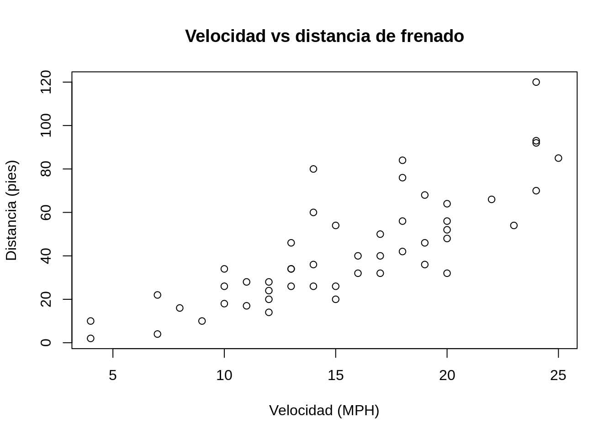

8 Quarto - sistema de publicación técnica y científica
8.1 Resumen
Quarto es un sistema de publicación de documentos técnicos y científicos, basado en código abierto. Estos documentos combinan código en R, y sus salidas (ej. tablas, gráficos, mapas), con la sintaxis de Markdown.
8.2 Trabajo previo
8.2.1 Lecturas
Quarto - Tutorial: Hello, Quarto. (s.f.). Recuperado 22 de agosto de 2022, de https://quarto.org/docs/get-started/hello/rstudio.html
8.3 Introducción
Quarto es un sistema de publicación de documentos técnicos y científicos, basado en código abierto. Entre sus principales capacidades están:
- Crear contenido dinámico con los lenguajes R, Python, Julia y Observable.
- Crear documentos Markdown de texto plano o cuadernos de notas de Jupyter.
- Publicar artículos académicos, reportes, presentaciones, sitios web, blogs y libros en HTML, PDF, MS Word, ePub y otros formatos.
- Crear contenido científico, incluyendo ecuaciones, citas bibliográficas, referencias cruzadas, figuras y otros elementos.
Quarto es la siguiente generación de R Markdown, un formato que permite insertar código en R, y sus salidas, en documentos escritos en Markdown. R Markdown fue introducido por Yihui Xie en 2012, junto con el paquete knitr, cuyo propósito es facilitar la investigación reproducible en R a través de la programación literaria (literate programming), un paradigma de programación propuesto por Donald Knuth en 1984.
Los programas “literarios” (o “letrados”) están escritos como una exposición lógica en un lenguaje humano similar a la explicación de las fórmulas y ecuaciones empleadas para representar y resolver un problema en un texto de física o de matemáticas. En estos programas, se describe el análisis del problema, su solución y su implementación, intercalando código fuente entre los párrafos (y otros contenidos como imágenes, tablas, gráficos estadísticos y mapas), de forma similar a como en los textos de matemáticas se intercalan las fórmulas y las ecuaciones. La programación literaria puede mejorar enormemente un programa, ya que permite documentar ampliamente en qué consiste el problema a resolver, cómo se resuelve, cómo y por qué se adoptó cierto diseño, cómo se optimizó y cómo se implementó en un lenguaje de programación.
8.4 Anatomía de un documento Quarto
Un documento Quarto tiene tres tipos de contenido:
- Metadatos en YAML.
- Narrativa en Markdown.
- Bloques de código fuente.
8.4.1 Metadatos en YAML
Todo documento Quarto inicia con un encabezado en la sintaxis YAML (YAML Ain’t Markup Language), el cual contiene metadatos del documento como el título, el autor, la fecha de creación, el formato de salida y la estructura de la tabla de contenidos, entre muchos otros.
Un encabezado YAML comienza y termina con tres guiones (---) y contiene un conjunto de campos y valores de la forma:
---
campo01: valor01
campo02: valor02
campo0n: valor0n
---Por ejemplo, un encabezado YAML típico puede ser el siguiente:
---
title: Mi primer documento Quarto
format:
html:
toc: true
toc_float: true
---Los campos del encabezado que dependen de otros campos se anidan con sangrías de dos espacios.
Los elementos de metadatos que pueden especificarse en el encabezado, pueden variar de acuerdo al formato de salida, como puede verse en los siguientes enlaces:
Existen elementos de metadatos para muchos otros formatos de salida (OpenOffice, ePub, presentaciones, wikis, etc.), como puede apreciarse en la Referencia de Quarto.
8.4.2 Narrativa en Markdown
La narrativa proporciona estructura y contenido al documento en la forma de encabezados, párrafos, enlaces y otros elementos de la sintaxis de Markdown.
8.4.3 Bloques de código fuente
En Quarto, los bloques (chunks) de código fuente se delimitan con tres backticks, tanto al inicio como al final del bloque. Los bloques de código en R se identifican con {r} y diferentes opciones identificadas con #|. Los bloques de otros lenguajes de programación se identifican con {python} y {julia}, por ejemplo.
El siguiente es un ejemplo de bloque de código en R y su salida:
```{r}
#| label: graficacion-cars
#| include: true
#| echo: false
plot(
x = cars$speed,
y = cars$dist,
main = "Velocidad vs distancia de frenado",
xlab = "Velocidad (MPH)",
ylab = "Distancia (pies)"
)
```La opción label se utiliza para etiquetar el bloque y la de include para especificar si se desea que el bloque y sus resultados se incluyan en el documento de salida.
8.5 ¿Cómo funciona Quarto?
Quarto se apoya en knitr y en Pandoc. knitr ejecuta el código en R (u otro lenguaje) y convierte los documentos a Markdown. Por su parte, Pandoc exporta los documentos Markdown al formato de salida deseado (ej. HTML, PDF, MS Word, MS PowerPoint). Este proceso se ilustra en la Figura 8.1.

8.6 Ejercicios
Con R y Quarto, cree un sitio web en GitHub Pages que contenga visualizaciones de los datos de homicidios ocurridos en Costa Rica en 2022, de acuerdo con las estadísticas publicadas en el sitio de datos abiertos del Organismo de Investigación Judicial (OIJ).
Seguidamente, se sugiere una serie de pasos para elaborar el sitio. Puede encontrar el código fuente de una solución parcial en https://github.com/gf0604-procesamientodatosgeograficos/2023-i-delitos-graficosbase.
Cree un repositorio vacío en su cuenta en GitHub (ej.
delitos-graficosbase).Clone el nuevo repositorio en su computadora con la opción File - New Project - Version Control - Git de RStudio.
Copie en el repositorio clonado el archivo CSV con los datos de delitos.
Cree un nuevo documento Quarto con la opción File - New File - Quarto Document de RStudio. Llene los metadatos (título, autor, etc.). Elija HTML como formato de salida.
Guarde el documento en el repositorio clonado, con el nombre
index.qmd(RStudio asigna la extensión automáticamente).Al inicio del documento, agregue texto Markdown que explique su contenido, la fuente de los datos y la dirección del repositorio en GitHub con el código fuente.
En un bloque de código en R, cargue el archivo CSV en un dataframe. Se recomienda asignar una etiqueta al bloque con la opción
#| label:. Considere el uso de otras etiquetas Quarto para, por ejemplo, controlar el despliegue de las salidas y del código fuente. Despliegue una muestra de los datos en una tabla.Escriba bloques adicionales de código en R que generen los siguientes gráficos (en cada uno, agregue título, fuente y procure que luzca bien mediante colores, tamaños de letras y otros elementos estéticos):
- Cantidad de delitos por provincia.
- Gráfico de barras verticales.
- Gráfico de barras horizontales.
- Gráfico de pastel.
- Cantidad de delitos por cantón en los 20 cantones con más delitos - gráfico de barras (verticales u horizontales).
- Cantidad de delitos por edad de la víctima - gráfico de pastel.
- Cantidad de delitos por provincia y edad de la víctima (una barra por provincia con colores según las edades) - gráfico de barras apiladas.
- Cantidad de homicidios por provincia y edad de la víctima (una barra por provincia con colores según las edades) - gráfico de barras apiladas.
- Cantidad de homicidios por cantón y edad de la víctima en los 20 cantones con más homicidios (una barra por provincia con colores según las edades) - gráfico de barras apiladas.
- Cantidad de delitos por provincia.
Presione el botón Render de RStudio para generar el archivo
index.html. Este será el arhivo que se desplegará en GitHub Pages.Sincronice el repositorio local con el repositorio en GitHub, ya sea con comandos de Git o subiendo manualmente los archivos. Si lo hace manualmente, asegúrese de actualizar:
- El documento HTML (
index.html). - El documento Quarto (
index.qmd). - El archivo CSV (
estadisticaspoliciales2022.csv). - Archivos temporales (ej. directorio
index_files).
- El documento HTML (
Genere el sitio en GitHub Pages con la opción Settings - Pages de GitHub.
Repita los pasos del 8 al 10 para cada modificación que realice en el documento Quarto.